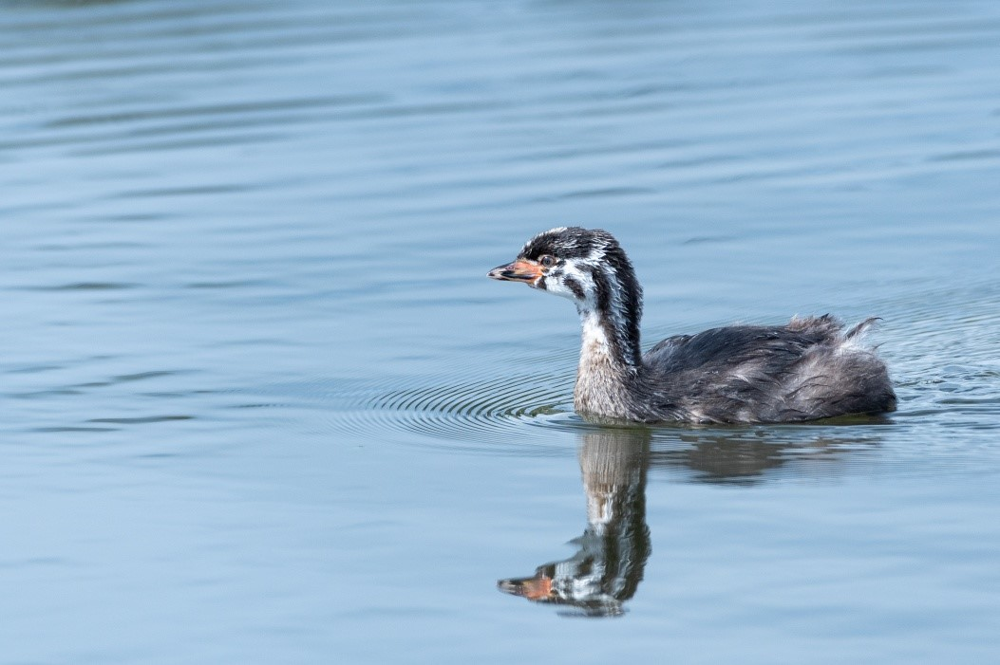
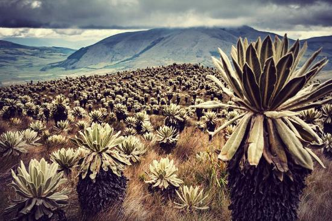
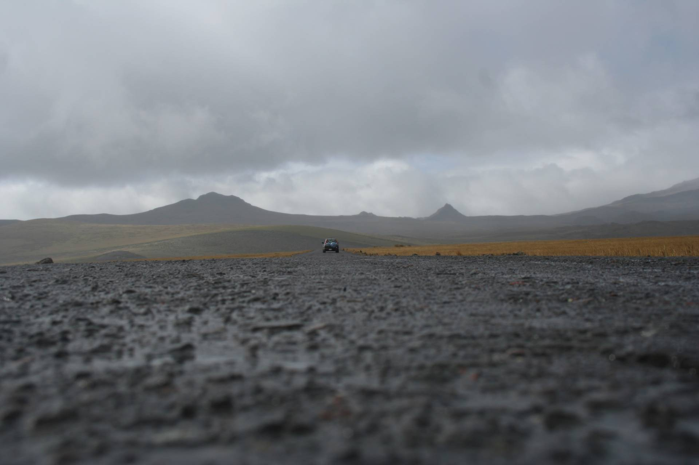

Reserva Ecológica Antisana - Napo, Ecuador
La Laguna La Mica, situada a más de 3900 metros sobre el nivel del mar, es un cuerpo de agua natural rodeado por el ecosistema único de páramo andino en la Reserva Ecológica Antisana. Fue construida y adaptada como reservorio para el abastecimiento de agua potable a Quito, pero además, representa un espacio vital para la conservación de la biodiversidad regional y un destino popular para ecoturistas y amantes de la naturaleza.
Su paisaje está caracterizado por amplias áreas de humedales, matorrales y praderas, con formaciones rocosas y vistas espectaculares al volcán Antisana. La laguna también actúa como reguladora del microclima, conservando la humedad y el equilibrio ecológico.
La Reserva Ecológica Antisana alberga una rica variedad de fauna típica del páramo andino. En la laguna y sus alrededores es común observar aves como el majestuoso cóndor andino, el curiquingue, zorzales, y diversas especies de patos silvestres que anidan en sus orillas. Entre los mamíferos destacan el venado de cola blanca, el lobo de páramo, y en áreas más alejadas, el oso de anteojos, especie emblemática y en peligro de extinción.
La flora de la región está adaptada a las bajas temperaturas y la alta radiación solar. Destacan los frailejones, que son plantas clave para la conservación de agua en el páramo, musgos, líquenes y pastos resistentes. Estas especies forman una cubierta vegetal que sostiene el suelo y protege a la laguna de la erosión, además de servir como refugio para muchas especies animales.
El clima en la zona es frío y húmedo, con temperaturas que varían entre 0°C y 10°C, y precipitaciones frecuentes durante el año. La altitud y la ubicación geográfica generan una alta radiación ultravioleta, por lo que es recomendable usar ropa adecuada y protección solar.
Desde Quito, toma la vía al Valle de los Chillos hasta Pintag, y sigue por la carretera ecológica hasta la entrada de la Reserva Antisana. El trayecto toma entre 1h30 a 2h en vehículo. El acceso es controlado.
¿Deseas visitarla con guía o saber más?
Email: Grupo3@lamica.ec
WhatsApp: +593 98 049 1612